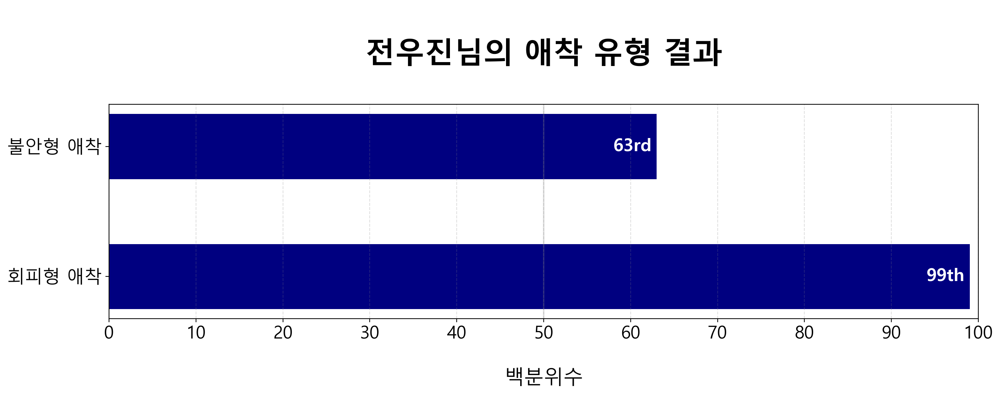
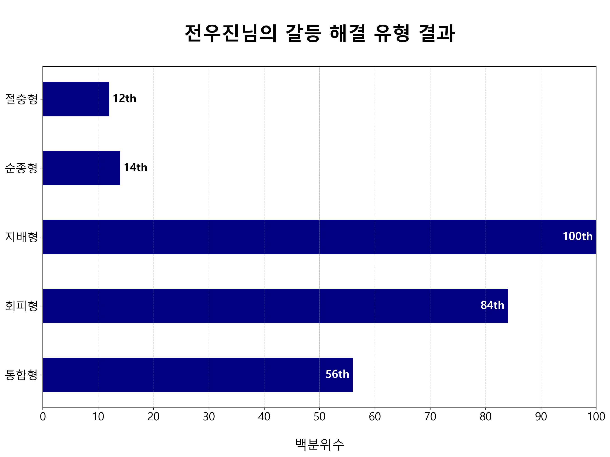
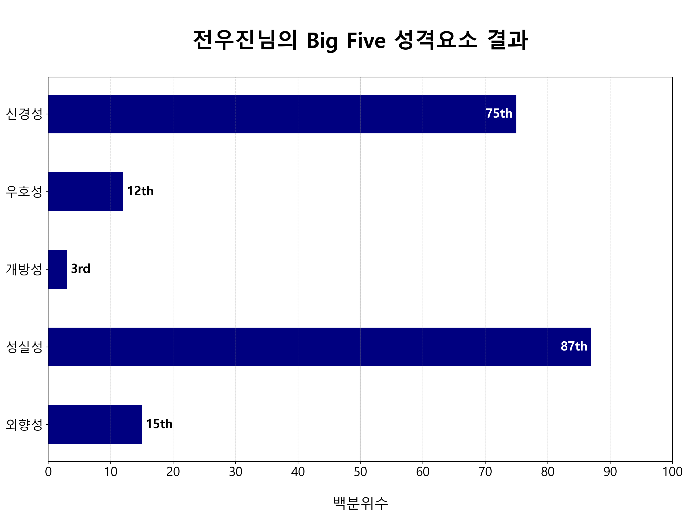

전우진님 안녕하세요,
연인관계 유형 테스트에 응답하여 주셔서 감사합니다!
저희는 mapper 알고리즘을 활용하여 95명, 71문항(MIMARA + ROCI-II)의 응답 데이터의 위상적 구조를 바탕으로
공통특징을 가진 4가지 유형을 발견하였고, 이를 SPAW 유형이라고 부르기로 했습니다.
응답자의 나이는 10대 후반에서 20대 초중반 (한국 대학생)에 분포하고 있으며,
응답자 성비는 남성:여성 = 1:1.26 으로 여성 응답자가 조금 더 많습니다.
또, 응답자 중에 다수와 확연한 위상적 차이를 보이는 아웃라이어와 응답 데이터가 유효하지 않은 불규칙적 응답자들을 분류했습니다.
SPAW 유형: 철회형
Withdrawer Type
철회형은 다른 유형에 비해 연인과 가깝게 지내는 것과 사적인 생각과 감정을 연인과 공유하는 것을 불편해합니다. 철회형은 연인과 소통할 때 모든 것을 말해주는 경우가 적으며, 연인이 관심을 보이지 않을 때 속상하거나 화를 내는 성향이 있습니다. 또, 갈등상황에서 자신의 개인적인 생각과 느낌을 속으로 담는 경향이 있어서 통합적으로 갈등을 해결하려는 성향이 낮게 나타납니다. 자기 자신과 상대의 입장을 통합하기 위해서는 서로의 깊은 욕구와 감정에 대한 솔직한 의사소통이 이루어져야 하기 때문입니다. 철회형은 대체적으로 갈등과 의견 불일치를 피하면서 갈등 해결을 미룹니다. 연인 간의 열린 마음과 신뢰가 연애의 중요한 요소임을 고려할 때, 철회형은 장기적으로 안정적인 관계를 유지하는 데 불리한 유형입니다.
철회형은 다른 유형에 비해 회피적이고, 불안과 신경성이 높고, 외향성, 성실성, 개방성이 유의미하게 낮습니다. 전체 응답자 중에 20%를 차지하는 유형으로, 안정형 다음으로 작은 집단입니다. 철회형 내에서는 여성 비율이 조금 더 높습니다.

위 그림은 위상데이터분석 알고리즘인 mapper의 결과로 주어진 simplicial complex를 시각화한 것입니다. 색칠된 것과 같이 유형을 나눴습니다.
애착 유형
MIMARA 응답 분석 결과
애착은 물리적 안전과 심리적 안정감을 제공하는 애착 대상을 구하고, 그 대상과 특정 거리를 유지하려는 행동 시스템입니다.
연인 관계에서는 연인이 서로의 애착 대상이 됩니다. 애착 시스템은 평상 시에는 비활성화되어 있지만, 다툼과 갈등 등의 스트레스 상황 속에 놓일 때 발동됩니다.
스트레스 상황에서 자신과 연인이 왜 특정 패턴으로 행동하는지 설명하는 데 활용할 수 있는 이론입니다.

애착 유형이 발동되면 연인에게 자기 공개를 하거나 도움을 요청하는 행동에서 변화가 나타날 수 있습니다. 또, 연인과 분리되는 것이나 연인을 향한 자신의 마음만큼 보답받지 못하는 것에 대한 걱정이 심해질 수 있고, 이를 해소하기 위해 연인으로부터 확신을 보여주도록 요구할 수도 있습니다. 연인에게 의존하는 것이 어려운 것 혹은 편안한 것도 애착 유형의 영향을 받습니다.
불안형 애착: 조금 높음
전우진님의 불안형 애착 점수의 백분위수는 63입니다.
100명의 사람이 모이면, 그 중 63명보다 전우진님의 불안형 애착 점수가 더 높고,
전우진님보다 불안 성향이 더 강한 사람은 37명임을 의미합니다.
불안형 애착 점수는 연인이 자신을 떠나는 것 혹은 자신을 인정해주지 않는 것에 대해 얼마나 걱정하는지 나타내는 지표입니다.
불안형 애착 점수가 높은 사람은 연인과의 감정적 거리를 줄임으로써 불안을 해소하고자 합니다.
불안 성향이 높은 사람은 자신을 부정적으로 보고 연인을 긍정적으로 보고 있을 가능성이 높습니다.
또, 불안형 애착 점수가 높을수록 연인이 자신을 떠나지 않는다는 믿음이 약하기 때문에 갈등상황에서 불안이 더 증가하는 악순환을 경험할 수 있습니다.
불안형 애착 점수가 매우 높은 사람들은 집착, 극심한 성적 끌림, 그리고 질투를 경험하곤 합니다.
회피형 애착: 매우 높음
전우진님의 회피형 애착 점수의 백분위수는 99입니다.
100명의 사람이 모이면, 그 중 99명보다 전우진님의 회피형 애착 점수가 더 높고,
전우진님보다 회피 성향이 더 강한 사람은 1명임을 의미합니다.
회피형 애착 점수는 자신이 연인과 가깝게 지내는 것에 대해 얼마나 불편감을 느끼는지 보여주는 지표입니다.
회피형 애착 점수가 높은 사람은 연인을 부정적으로 보고, 자신을 긍정적으로 보는 성향이 있을 수 있습니다.
회피형 애착 점수가 매우 높은 사람은 연인과 감정적으로 친밀해지는 것이 가능하지 않다고 믿거나 원하지 않는 경우가 많습니다.
이런 믿음은 연인 간 거리두기 행동으로 이어지게 되어 부정적인 생각과 감정을 회피할 수 있게 도와줍니다.
하지만 역설적이게도 회피형 애착 점수가 높은 사람들은 그렇지 않은 사람들보다 유의미하게 많은 부정적인 감정을 경험하는 것으로 알려져 있습니다.
반면에 회피형 애착 점수가 낮은 사람은 상호 의존하는 친밀한 관계를 편안하게 여깁니다.
불안형 애착과 회피형 애착 점수가 낮은 사람일수록 더 높은 관계 만족도를 경험하는 것으로 보고됩니다. 두 점수 모두 낮은 경우를 안정형 애착이라고 부릅니다. 안정형 애착 성향이 높을수록 연인을 더 신뢰하며, 연인에게 의지할 수 있다고 느끼며, 연인을 예측 가능한 대상으로 바라봅니다. 또, 안정형 애착을 가진 사람은 연인의 단점을 수용하는 데 어려움이 적습니다.
갈등 해결 유형
ROCI-II 응답 분석 결과
갈등 해결은 연인관계의 불가피한 요소일 뿐만 아니라 장기적인 관계 만족도와 가장 강력하게 연관되어 있는 변수로 알려져 있습니다. 갈등을 해결하려는 시도는 연인끼리 협력적으로 의사소통에 참여하여 서로를 이해할 수 있는 좋은 기회입니다. 반대로, 미흡한 갈등 해결은 커플 상담에서 가장 자주 등장하는 문제이기도 합니다. 성공적인 갈등 해결이 성공적인 관계를 만든다고 볼 수 있습니다.
전우진님의 갈등 해결 유형별 결과는 다음과 같습니다.

본 검사는 갈등해결에 두 가지 동기가 있다는 점을 전제합니다: 자신의 목적을 달성하려는 동기(자기 동기)와 대인관계를 유지하려는 동기(타인 동기)입니다. 두 가지 동기의 강도에 따라 5가지 유형으로 분류할 수 있습니다.
절충형: 낮음
절충형은 통합형과 달리 서로 조금씩 포기하며 절충점에 도달하는 방식으로 갈등을 해결하려는 유형입니다. 자기 동기와 타인 동기가 모두 중간인 경우를 나타냅니다. 갈등을 해결하기 위해 일부를 얻고 일부를 잃는다는 믿음이 있으며, 연인과 "주고 받기"를 사용하며 협상하는 유형입니다.
순종형: 낮음
순종형은 갈등 시 상대방의 요구를 들어주고, 상대에게 양보하는 방식으로 갈등을 해결하려는 유형입니다. 자기 동기가 낮고, 타인 동기가 높은 경우를 나타냅니다. 대체적으로 연인의 요구에 굴복하고, 연인의 희망 사항을 확인하며, 연인의 기대를 충족시키기 위해 노력하는 유형입니다.
지배형: 매우 높음
지배형은 갈등에 대한 자신의 해결책을 주장하고, 힘이나 권위를 이용하여 자신에게 유리한 결정을 내리도록 갈등을 “지배”하는 유형입니다. 자기 동기가 높고, 타인 동기가 낮은 경우를 나타냅니다. 자신의 입장을 추구하는 데 확고하고, 고집이 세며, 연인과 논쟁하여 갈등을 해결하는 유형입니다.
회피형: 높음
회피형은 불쾌감과 악감정을 방지하기 위해 자신의 생각을 꺼내지 않으면서 갈등을 회피하는 유형입니다. 자기 동기와 타인 동기 모두 낮은 경우를 나타냅니다. 연인과의 말다툼이나 의견불일치를 피하고, 차이점에 대해 이야기하기를 꺼려 하며, 연인과 만나기를 피할 때도 있습니다.
통합형: 조금 높음
통합형은 자신과 상대의 입장을 모두 중요하게 여기는 갈등 해결 유형입니다. 연인과 협력적인 태도를 보이며, 자신의 감정을 솔직하게 소통하고, 동의할 수 있는 영역을 찾고, 양쪽의 입장을 통합하고, 서로에게 공감하며 갈등에서 win-win할 수 있는 대안을 실천합니다. 서로에게 경청하며 자신의 입장을 솔직하게 전달하는 것은 관계의 성장과 상호 이해를 도와줍니다.
Big Five 성격요소
연인관계 상황에서의 Big Five 성격요소
설문 문항을 재분류하여 연인관계 상황에서의 big five 성격 특징들을 보여주는 점수 합산 방식을 개발했습니다. Big five 성격요소에 근거한 재분류의 유효성은 Cronbach’s alpha test를 통해 검증되었습니다. 정식 big five 성격검사와 다른 방식으로 도출된 결과임을 밝힙니다.
전우진님의 big five 성격요소별 결과는 다음과 같습니다.

신경성: 조금 높음
신경성은 연인과의 갈등에서 철회하고, 연인 혹은 관계에 대한 좌절감과 실망감을 경험하는 정도를 나타냅니다. 신경성은 일반적으로 고통, 슬픔, 분노, 두려움, 불안에 대한 민감성을 측정하는 지표입니다. 신경성이 높은 사람은 불안과 우울을 경험할 확률이 높으며, 관계에 대해 필요 이상으로 걱정하고, 위험을 감수하는 대신에 회피하려 합니다. 연인과의 갈등처럼 낯설고 복잡한 상황에서 철회할 가능성이 높습니다. 신경성이 낮은 사람은 걱정이 적고, 낯설고 복잡하고 위험한 상황에서 물러나지 않으려고 합니다. 쉽게 상처를 받지 않으며, 거절을 당하는 것에 민감하지 않고, 두렵고 불안한 상태를 경험한다면 빠르게 회복합니다.
우호성: 낮음
우호성은 연인의 욕구와 감정을 고려하고, 공감적으로 행동하려는 성향으로 나타냅니다. 우호성이 높은 사람은 친절합니다. 협력적이고, 착하고, 상대를 잘 믿고, 순종적입니다. 그러나 상처와 갈등을 피하려는 성향이 있어서 자신의 생각을 숨길 때가 있습니다. 그래서 연인을 향한 숨은 분노가 있을 수 있고, 단기적인 평화를 위해 관계의 장기적 안정성을 희생하려고 할 수 있습니다. 우호성이 낮은 사람은 친절하지 않습니다. 지배적이고, 고집이 세고, 경쟁적이고, 엄합니다. 하지만 직설적으로 말하는 경향이 있어서 그들의 입장을 확실하게 전달하는 편입니다.
개방성: 매우 낮음
개방성은 솔직하고 열린 소통을 하는 정도, 그리고 갈등을 해결하기 위해 새로운 방법들을 창의적으로 모색하려는 성향을 보여줍니다. 개방성은 일반적으로 예술, 철학, 감정, 미에 대한 관심의 정도를 보여주는 지표입니다. 개방성이 높은 사람은 창의적이고, 탐구적이고, 배움에 관심이 많고, 지속적으로 연인과 새로운 것을 시도하려고 합니다. 호기심이 많고, 복잡하고 추상적인 사고를 즐기며, 갈등을 해결할 수 있는 방법을 매우 다양하게 생각해냅니다. 개방성이 낮은 사람은 예측가능하고 반복적인 루틴을 편하게 여깁니다. 새로운 것을 추구하는 것보다 기존의 것을 유지하는 데 관심이 많고, 리더를 잘 따르고, 변화가 적은 안정적인 관계를 좋아합니다.
성실성: 높음
성실성은 관계를 위해 시간과 노력을 투자하고, 의지할 만한 연인이 되어주고자 하는 성향으로 정의했습니다. 성실성이 높은 사람은 책임감이 강하고, 열심히 노력하고, 관계에 집중하고, 규칙과 절차를 잘 따릅니다. 성실한 사람이 계획을 세우면 반드시 지키려고 노력하기 때문에 관계의 질서를 유지하는 역할을 합니다. 하지만 성실성이 높으면 자신의 실패에 높은 수준의 죄책감과 수치심을 느끼고, 타인의 실패를 엄격하게 판단할 수 있습니다. 성실성이 낮은 사람은 갈등해결과 소통을 미루기 위한 핑계를 찾고, 약속을 어길 때가 있으며, 쉽게 산만해지는 특징이 있을 수 있습니다.
외향성: 낮음
외향성은 연인과 소통하고자 하는 성향과 자신의 생각을 굳게 내세우는 성향을 나타냅니다. 외향성은 사람들과 있을 때 즐거움, 희망, 기대와 같이 긍정적인 감정을 경험하는 정도를 보여줍니다. 그래서 외향성이 높은 사람은 낙관적이고, 열정적이고, 이야기하기를 좋아하고, 자신의 주장을 내세우고, 사람들을 웃게 만듭니다. 연인에게 자신의 생각을 잘 공유하고, 추진력과 설득력을 가지고 소통합니다. 외향성이 낮은 사람은 현재의 즐거움보다 미래를 생각하고, 혼자서 일하거나 공부하기를 잘하며, 사람들을 만날 수 있는 기회가 있어도 쉽게 방해받지 않습니다.
분석 방법 요약
본 검사는 위상 데이터 분석과 통계적 분석기법을 활용하여 진행되었습니다. Mapper의 필터함수는 PCA (성분 2개), clustering 함수는 DBSCAN을 활용했습니다. 통계적 검정은 정규성 검정(Shapiro Test), 왜도 검정(Skewness Test), 설문의 신뢰도 검정(Cronbach’s Alpha Test), 등분산 검정 및 집단의 평균 비교(Bartlett’s test, Student/Welch t-test)를 진행했습니다.
참고자료
- Kim Bartholomew. Avoidance of intimacy: An attachment perspective. Journal of Social and Personal relationships, 7(2):147–178, 1990. 2.2
- Thomas N Bradbury and Benjamin R Karney. Understanding and altering the longitudinal course of intimate partnerships. Social Policy Journal of New Zealand, 23:1–30, 2004. 2.3
- John M Gottman. Predicting the longitudinal course of marriages. Journal of marital and Family Therapy, 17(1):3–7, 1991. 2.3
- Cindy Hazan and Phillip Shaver. Romantic love conceptualized as an attachment process. Journal of personality and social psychology, 52(3):511, 1987.2.2
- Frédéric Chazal and Bertrand Michel. An introduction to topological data analysis: fundamental and practical aspects for data scientists. Frontiers in artificial intelligence, 4:108, 2021.